指定自立支援医療機関（育成医療・更生医療） 顎口腔機能診断医療機関

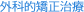
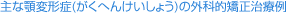
下顎前突（うけ口）
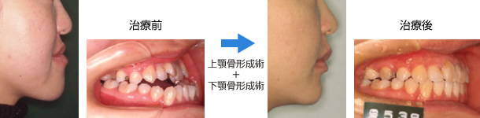
上顎前突（出っ歯）および開咬
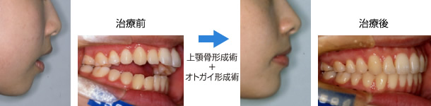
顔面非対称
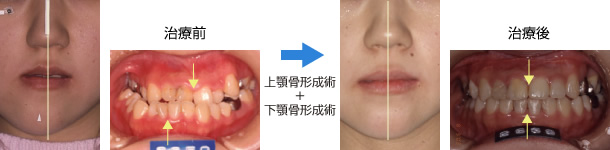
下あごの骨や上あごの骨が過度に大きく成長したり、逆に成長が少なかったり、またアゴの骨が左右に変形して、上下のあごの骨の骨格的なバランスの乱れが生じ、噛み合わせが悪くなっている方がいらっしゃいます。そのため、矯正歯科治療だけでは噛み合わせを治すことができず、下あごの骨や上あごの骨を切って正しい大きさや位置に改善しなければ、噛めるようにならないことがあります。これは、顎変形症(がくへんけいしょう)といい、外科的矯正治療(矯正歯科治療と外科手術)によって、かみ合わせと上下のあごの骨のバランスを同時に回復する治療が必要となります。
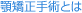
手術は一般的に下顎の骨切り術(下顎骨形成術：下顎枝矢状分割術)、上顎骨骨切り術(上顎骨形成術：LeFortⅠ型骨切り術)およびオトガイ形成術を単独に、または組み合わせて行います。
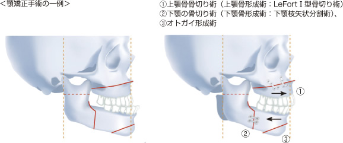
手術はお口の中から行いますので、お顔に傷はつきません。また、手術に伴う出血には自己血輸血(自分の血液をストックしておき出血時に輸血する)で対応しております。
今は矯正歯科治療も外科手術も両方健康保険が適応されており、治療費の負担が少なくなり、治療を受けられる患者さんが多くなってきております。
この外科的矯正治療は、近年非常に発達し、手術も安定し、入院期間が短くなりました。この治療が適応かどうかはお気軽に当院にご相談ください。
現在までに約350人の外科矯正治療を行っています。当院は顎顔面領域に特化したコーンビームCT(CBMercuRay日立メディコ社製)を所有しており、さらに、顎顔面外科シミュレーションソフトウェア(Simplant OMS：横河マテリアライズ社)用いて分析を行うとともに、仮想手術でのシュミレーションを行っています。また、三次元デジタイザを用いて、独自のソフトウェアを開発して、手術による骨の移動や量を計測して手術に役立てています。これらのシュミレーションや手術後に予想される顔貌のバランスをお見せして、インフォームドコンセント(患者さんに対する説明と理解)に役立たせております。
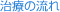
- 1） 初診検査：問診、レントゲン検査、歯列模型作成などを行います。
- 2） 診断・および口腔外科との手続き：矯正歯科医と口腔外科医が連携し、分析結果に基づいて診断を行い、治療方針を決定いたします。
- 3） 術前矯正スタート：手術を行うことを前提として、あごを動かした状態を想定して主にマルチブラケット装置によって歯を並べていきます。
- 4） 術前検査：術前矯正治療が終わって、実際の手術のための精密な検査を行います。
- 5） 手術：下あごだけの手術ならば約2週間、上下のあごの手術ならば約3週間の入院です。
- 6） 術後矯正スタート：手術後に最終的な仕上げの矯正治療を行います。
- 7） 保定治療：きれいになった歯並びが後戻りしないようための装置を装着します。
- 8） 必要ならば最終補綴。
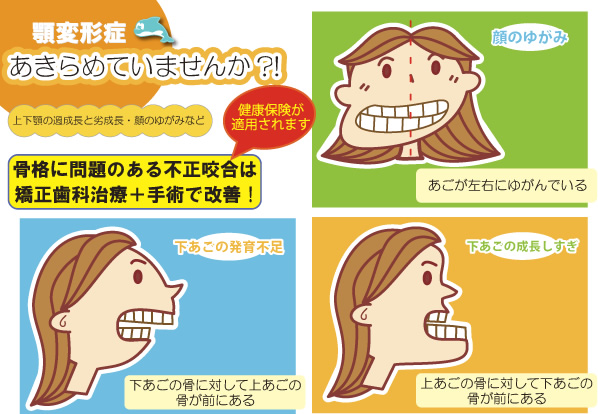
以下に、当院で行っている外科的矯正治療のシステムを学会などで発表しているものを抜粋しました。
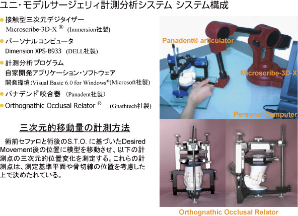
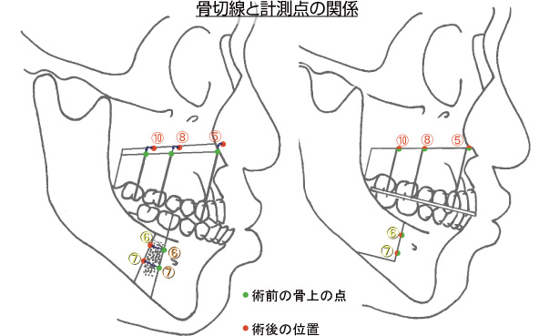
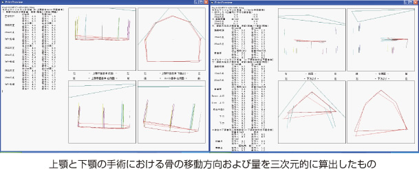
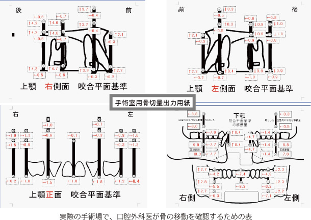
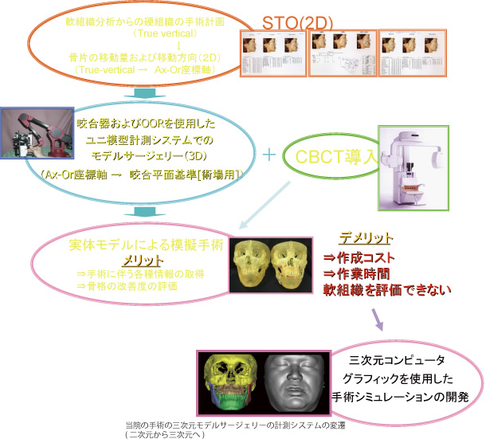
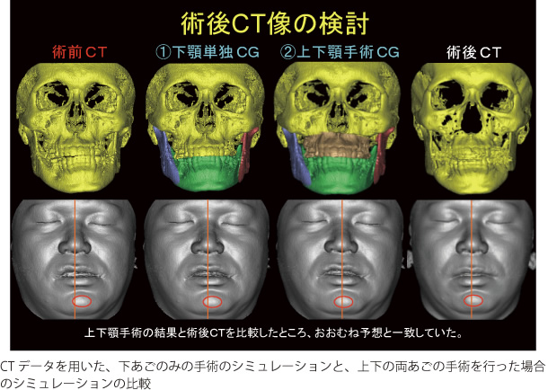
実際のコンピューターグラフィックでのシミュレーションは以下のように運用されています。この患者さんは、反対咬合で、下あごが大きく左に曲がっている患者さんです。当然、上あごと下あごの両方の手術を行わなければお顔のバランスが取れません。上あごと下あごの移動量を第一回目のシミュレーション(上図)で、バランスが取れ、しかも手術可能な骨の動きをしているかを確かめました。丸印のところで、骨の当たりや隙間が大きいことが判明しました。そのため、手術計画の変更となり、上下の骨の移動量を調節して、どうなるかを見たのが2回目のシミュレーション結果(下図)です。口腔外科との協議の結果、2回目のシミュレーションの手術プランが採用されました。
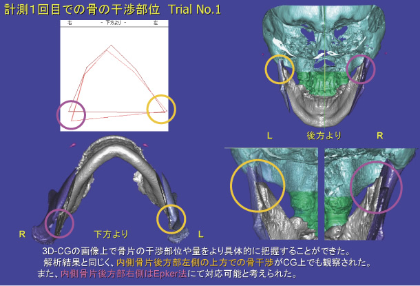
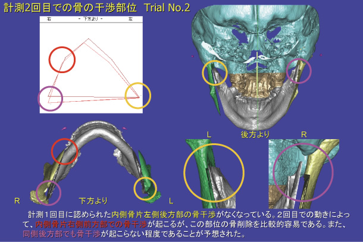